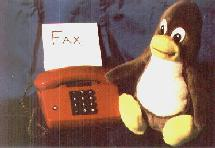

Facsimile
Gert Doering, the mgetty+sendfax developer wrote in the i4l mailing list, that his software soon will work with ISDN4Linux perhaps (you need a fax modem yet). We will have to wait for it...
There is one possibility to prepare an operating fax system: take an old 2400 baud modem (with fax ability) or better a 14400 one and use it with mgetty; connect it to your ISDN telephone station. If there are cables free. Here are no one free, and I can't :-(